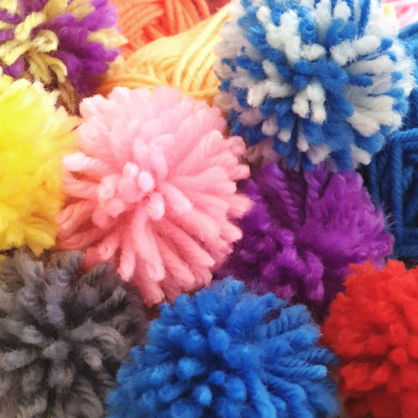
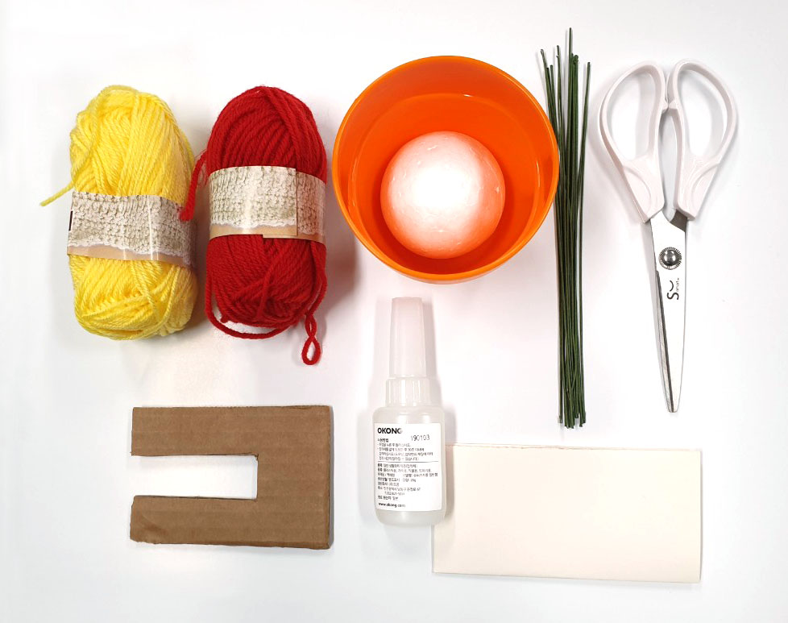
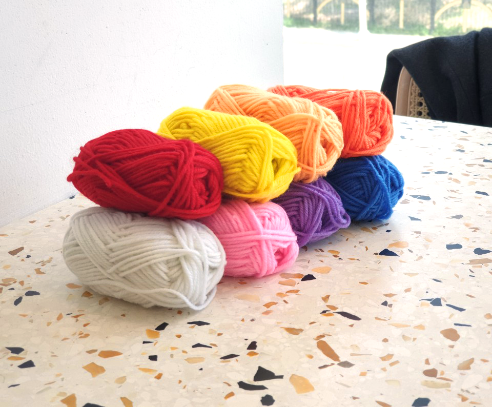
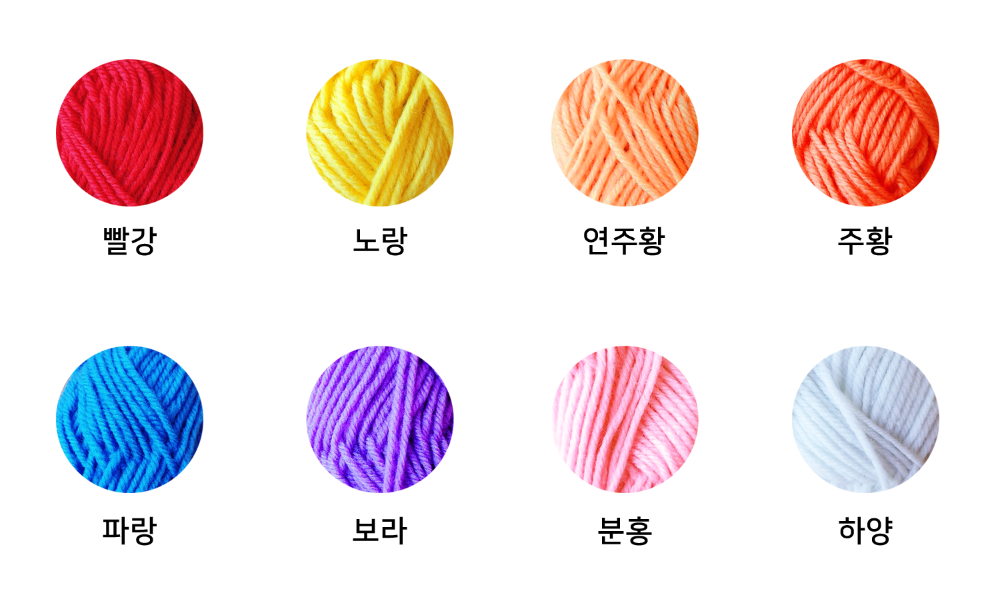
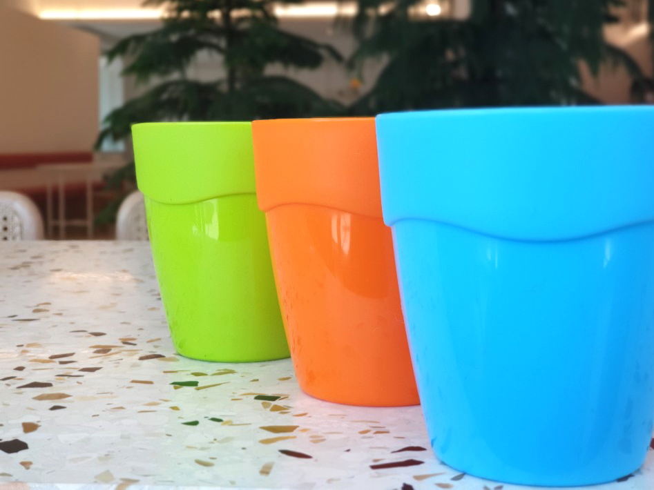
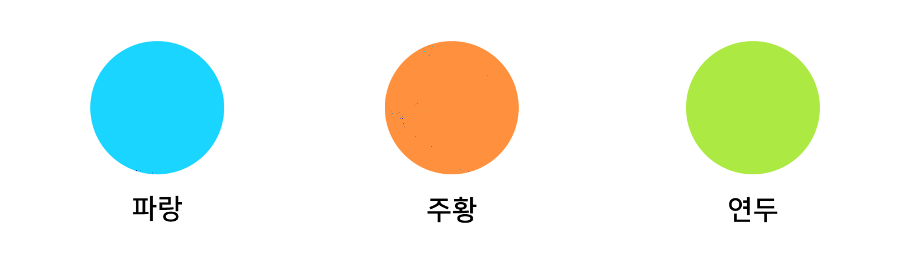

자신만의 꽃을 만들 수 있는 DIY 키트입니다.
털실만 이용하여 간단하게 조화를 만들어 낼 수 있습니다.
취향에 따라, 만들면서 폼폼의 사이즈를 조절할 수 있습니다.
방을 화사하게 보이고 싶을 때 쓸 수 있는 귀여운 아이템입니다.
13세 미만 어린아이가 혼자 만들기엔 위험합니다.
반드시 보호자와 동반하여 키트를 만들어 주시기 바랍니다.
영어로 '방울'을 뜻하는 폼폼(pompom)은 털실로 만든 털방울을 말합니다.
털실(2가지 색상), 화분, 철사, 가위, 스티로폼, 순간접착제, 'ㄷ'자 종이, 설명서
재질 - 아크릴 100% / ※털실 추가시 개당 990원
아크릴 100%로 만들어 친환경적이고 볼륨감이 있는 뜨개실입니다.
8가지 색상 중 2가지 색상을 원하는 대로 골라 조합할 수 있습니다.
털실 색상을 추가하여 다양한 색상의 폼폼꽃을 만드세요!
※털실 추가시 개당 990원
※실제 제품 색상과 차이가 있을 수 있습니다.
재질 - pp / 사이즈 - 높이 8cm x 지름 6.3cm
생화를 키울 때 사용하는 화분이 아닌, 밑이 막혀있는 컵형식의 화분입니다.
자신이 원하는 분위기에 맞는 색상을 고를 수 있습니다.
※실제 제품 색상과 차이가 있을 수 있습니다.
'ㄷ'자 종이에 털실을 두껍게 감고, 가운데 부분을 꽉! 묶는다.
털실을 종이에서 빼고 매듭지어진 부분을 잘라낸 후, 모양이 동그랗게 잡히도록 다듬는다.
철사 끝에 순간접착제를 '약간' 묻히고 폼폼에 꼿는다.